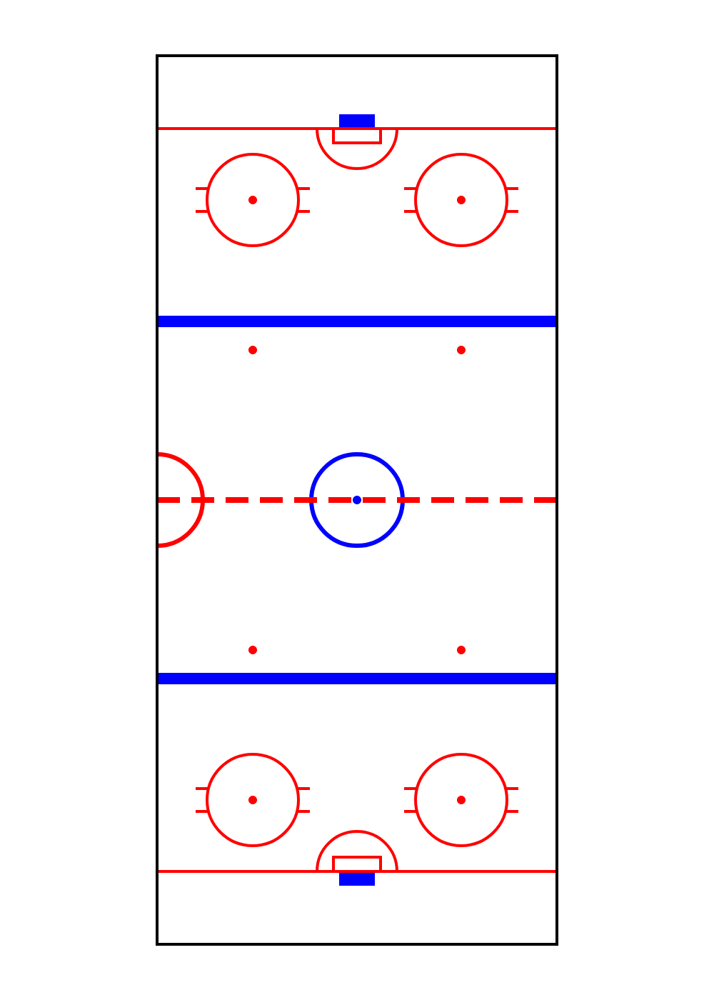
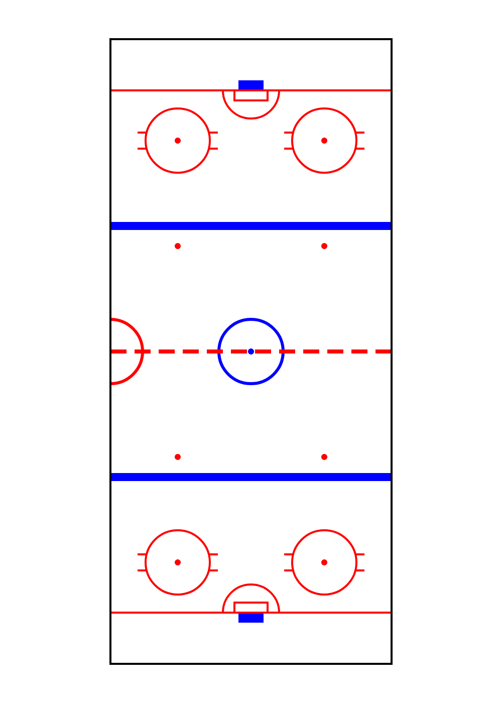

Ice Hockey
Original Python code
import pgzero, pgzrun, pygame
import math, sys, random
from enum import Enum
from pygame.math import Vector2
# Check Python version number. sys.version_info gives version as a tuple, e.g. if (3,7,2,'final',0) for version 3.7.2.
# Unlike many languages, Python can compare two tuples in the same way that you can compare numbers.
if sys.version_info < (3,5):
print("This game requires at least version 3.5 of Python. Please download it from www.python.org")
sys.exit()
# Check Pygame Zero version. This is a bit trickier because Pygame Zero only lets us get its version number as a string.
# So we have to split the string into a list, using '.' as the character to split on. We convert each element of the
# version number into an integer - but only if the string contains numbers and nothing else, because it's possible for
# a component of the version to contain letters as well as numbers (e.g. '2.0.dev0')
# We're using a Python feature called list comprehension - this is explained in the Bubble Bobble/Cavern chapter.
pgzero_version = [int(s) if s.isnumeric() else s for s in pgzero.__version__.split('.')]
if pgzero_version < [1,2]:
print("This game requires at least version 1.2 of Pygame Zero. You have version {0}. Please upgrade using the command 'pip3 install --upgrade pgzero'".format(pgzero.__version__))
sys.exit()
WIDTH = 800
HEIGHT = 480
TITLE = "Ice Hockey"
HALF_WINDOW_W = WIDTH / 2
# Size of level, including both the pitch and the boundary surrounding it
LEVEL_W = 1000
LEVEL_H = 1400
HALF_LEVEL_W = LEVEL_W // 2
HALF_LEVEL_H = LEVEL_H // 2
HALF_PITCH_W = 280
HALF_PITCH_H = 622
GOAL_WIDTH = 50
GOAL_DEPTH = 20
HALF_GOAL_W = GOAL_WIDTH // 2
PITCH_BOUNDS_X = (HALF_LEVEL_W - HALF_PITCH_W, HALF_LEVEL_W + HALF_PITCH_W)
PITCH_BOUNDS_Y = (HALF_LEVEL_H - HALF_PITCH_H, HALF_LEVEL_H + HALF_PITCH_H)
GOAL_BOUNDS_X = (HALF_LEVEL_W - HALF_GOAL_W, HALF_LEVEL_W + HALF_GOAL_W)
GOAL_BOUNDS_Y = (HALF_LEVEL_H - 520 - GOAL_DEPTH,
HALF_LEVEL_H + 520 + GOAL_DEPTH)
PITCH_RECT = pygame.rect.Rect(PITCH_BOUNDS_X[0], PITCH_BOUNDS_Y[0], HALF_PITCH_W * 2, HALF_PITCH_H * 2)
GOAL_0_RECT = pygame.rect.Rect(GOAL_BOUNDS_X[0], GOAL_BOUNDS_Y[0], GOAL_WIDTH, GOAL_DEPTH)
GOAL_1_RECT = pygame.rect.Rect(GOAL_BOUNDS_X[0], GOAL_BOUNDS_Y[1] - GOAL_DEPTH, GOAL_WIDTH, GOAL_DEPTH)
AI_MIN_X = HALF_LEVEL_W - HALF_PITCH_W + GOAL_DEPTH
AI_MAX_X = LEVEL_W - AI_MIN_X
AI_MIN_Y = HALF_LEVEL_H - HALF_PITCH_H + GOAL_DEPTH
AI_MAX_Y = LEVEL_H - AI_MIN_Y
PLAYER_START_POS = [(350, 550), (650, 450), (250, 850), (500, 750), (750, 950), (350, 1250), (650, 1150)]
LEAD_DISTANCE_1 = 10
LEAD_DISTANCE_2 = 50
DRIBBLE_DIST_X, DRIBBLE_DIST_Y = 18, 16
# Speeds for players in various situations. Speeds including 'BASE' can be boosted by the speed_boost difficulty
# setting (only for players on a computer-controlled team)
PLAYER_DEFAULT_SPEED = 2
CPU_PLAYER_WITH_BALL_BASE_SPEED = 2.6
PLAYER_INTERCEPT_BALL_SPEED = 2.75
LEAD_PLAYER_BASE_SPEED = 2.9
HUMAN_PLAYER_WITH_BALL_SPEED = 3
HUMAN_PLAYER_WITHOUT_BALL_SPEED = 3.3
DEBUG_SHOW_LEADS = False
DEBUG_SHOW_TARGETS = False
DEBUG_SHOW_PEERS = False
DEBUG_SHOW_SHOOT_TARGET = False
DEBUG_SHOW_COSTS = False
class Difficulty:
def __init__(self, goalie_enabled, second_lead_enabled, speed_boost, holdoff_timer):
self.goalie_enabled = goalie_enabled
# When a player has the ball, either one or two players will be chosen from the other team to try to intercept
# the ball owner. Those players will have their 'lead' attributes set to a number indicating how far ahead of the
# ball they should try to run. (If they tried to go to where the ball is currently, they'd always trail behind)
# This attribute determines whether there should be one or two lead players
self.second_lead_enabled = second_lead_enabled
# Speed boost to apply to CPU-team players in certain circumstances
self.speed_boost = speed_boost
# Hold-off timer limits rate at which computer-controlled players can pass the ball
self.holdoff_timer = holdoff_timer
DIFFICULTY = [Difficulty(False, False, 0, 120), Difficulty(False, True, 0.1, 90), Difficulty(True, True, 0.2, 60)]
# Custom sine/cosine functions for angles of 0 to 7, where 0 is up,
# 1 is up+right, 2 is right, etc.
def sin(x):
return math.sin(x*math.pi/4)
def cos(x):
return sin(x+2)
# Convert a vector to an angle in the range 0 to 7
def vec_to_angle(vec):
# todo explain a bit
# https://gamedev.stackexchange.com/questions/14602/what-are-atan-and-atan2-used-for-in-games
return int(4 * math.atan2(vec.x, -vec.y) / math.pi + 8.5) % 8
# Convert an angle in the range 0 to 7 to a direction vector. We use -cos rather than cos as increasing angles move
# in a clockwise rather than the usual anti-clockwise direction.
def angle_to_vec(angle):
return Vector2(sin(angle), -cos(angle))
# Used when calling functions such as sorted and min.
# todo explain more
# p.vpos - pos results in a Vector2 which we can get the length of, giving us
# the distance between pos and p.vpos
def dist_key(pos):
return lambda p: (p.vpos - pos).length()
# Turn a vector into a unit vector - i.e. a vector with length 1
# We also return the original length, before normalisation.
# We check for zero length, as trying to normalise a zero-length vector results in an error
def safe_normalise(vec):
length = vec.length()
if length == 0:
return Vector2(0,0), 0
else:
return vec.normalize(), length
# The MyActor class extends Pygame Zero's Actor class by providing the attribute 'vpos', which stores the object's
# current position using Pygame's Vector2 class. All code should change or read the position via vpos, as opposed to
# Actor's x/y or pos attributes. When the object is drawn, we set self.pos (equivalent to setting both self.x and
# self.y) based on vpos, but taking scrolling into account.
class MyActor(Actor):
def __init__(self, img, x=0, y=0, anchor=None):
super().__init__(img, (0, 0), anchor=anchor)
self.vpos = Vector2(x, y)
# We draw with the supplied offset to enable scrolling
def draw(self, offset_x, offset_y):
# Set Actor's screen pos
self.pos = (self.vpos.x - offset_x, self.vpos.y - offset_y)
super().draw()
# Ball physics model parameters
KICK_STRENGTH = 11.5
DRAG = 0.98
# ball physics for one axis
def ball_physics(pos, vel, bounds):
# Add velocity to position
pos += vel
# Check if ball is out of bounds, and bounce if so
if pos < bounds[0] or pos > bounds[1]:
pos, vel = pos - vel, -vel
# Return new position and velocity, applying drag
return pos, vel * DRAG
# Work out number of physics steps for ball to travel given distance
def steps(distance):
# Initialize step count and initial velocity
steps, vel = 0, KICK_STRENGTH
# Run physics until distance reached or ball is nearly stopped
while distance > 0 and vel > 0.25:
distance, steps, vel = distance - vel, steps + 1, vel * DRAG
return steps
class Goal(MyActor):
def __init__(self, team):
x = HALF_LEVEL_W
y = GOAL_0_RECT.bottom if team == 0 else GOAL_1_RECT.top
anchor = 'bottom' if team == 0 else 'top'
super().__init__("ice_hockey_goal" + str(team), x, y, ('center', anchor))
self.team = team
def active(self):
# Is ball within 500 pixels on the Y axis?
return abs(game.ball.vpos.y - self.vpos.y) < 500
# Calculate if player 'target' is a good target for a pass from player 'source'
# target can also be a goal
def targetable(target, source):
# Find normalised (unit) vector v0 and distance d0 from source to target
v0, d0 = safe_normalise(target.vpos - source.vpos)
# If source player is on a computer-controlled team, avoid passes which are likely to be intercepted
# (If source is player-controlled, that's the player's job)
if not game.teams[source.team].human():
# For each player p
for p in game.players:
# Find normalised vector v1 and distance d1 from source to p
v1, d1 = safe_normalise(p.vpos - source.vpos)
# If p is on the other team, and between source and target, and at a similiar
# angular position, target is not a good target
# Multiplying two vectors together invokes an operation known as dot product. It is calculated by
# multiplying the X components of each vector, then multiplying the Y components, then adding the two
# resulting numbers. When each of the input vectors is a unit vector (i.e. with a length of 1, as returned
# from the safe_normalise function), the result of which is a number between -1 and 1. In this case we use
# the result to determine whether player 'p' (vector v1) is in roughly the same direction as player 'target'
# (vector v0), from the point of view of player 'source'.
if p.team != target.team and d1 > 0 and d1 < d0 and v0*v1 > 0.8:
return False
# If target is on the same team, and ahead of source, and not too far away, and source is facing
# approximately towards target (another dot product operation), then target is a good target.
# The dot product operation (multiplying two unit vectors) is used to determine whether (and to what extent) the
# source player is facing towards the target player. A value of 1 means target is directly ahead of source; -1
# means they are directly behind; 0 means they are directly to the left or right.
# See above for more explanation of dot product
return target.team == source.team and d0 > 0 and d0 < 300 and v0 * angle_to_vec(source.dir) > 0.8
# Get average of two numbers; if the difference between the two is less than 1,
# snap to the second number. Used in Ball.update()
def avg(a, b):
return b if abs(b-a) < 1 else (a+b)/2
def on_pitch(x, y):
# Only used when dribbling
return PITCH_RECT.collidepoint(x,y) \
or GOAL_0_RECT.collidepoint(x,y) \
or GOAL_1_RECT.collidepoint(x,y)
class Ball(MyActor):
def __init__(self):
super().__init__("ice_hockey_puck", HALF_LEVEL_W, HALF_LEVEL_H)
# Velocity
self.vel = Vector2(0, 0)
self.owner = None
self.timer = 0
self.shadow = MyActor("balls")
# Check for collision with player p
def collide(self, p):
# The ball collides with p if p's hold-off timer has expired
# and it is DRIBBLE_DIST_X or fewer pixels away
return p.timer < 0 and (p.vpos - self.vpos).length() <= DRIBBLE_DIST_X
def is_in_goal(self):
"""Return True if this ball instance is in 1 of the 2 goals."""
return (GOAL_0_RECT.collidepoint(self.vpos.x, self.vpos.y) or
GOAL_1_RECT.collidepoint(self.vpos.x, self.vpos.y))
def update(self):
self.timer -= 1
# If the ball has an owner, it's being dribbled, so its position is
# based on its owner's position
if self.owner:
# Calculate new ball position for dribbling
# Our target position will be a point just ahead of our owner. However, we don't want to just snap to that
# position straight away. We want to transition to it over several frames, so we take the average of our
# current position and the target position. We also use slightly different offsets for the X and Y axes,
# to reflect that that the game's perspective is not completely top-down - so the positions the ball can
# take in relation to the player should form an ellipse instead of a circle.
# todo explain maths
new_x = avg(self.vpos.x, self.owner.vpos.x + DRIBBLE_DIST_X * sin(self.owner.dir))
new_y = avg(self.vpos.y, self.owner.vpos.y - DRIBBLE_DIST_Y * cos(self.owner.dir))
if on_pitch(new_x, new_y):
# New position is on the pitch, so update
self.vpos = Vector2(new_x, new_y)
else:
# New position is off the pitch, so player loses the ball
# Set hold-off timer so player can't immediately reacquire the ball
self.owner.timer = 60
# Give ball small velocity in player's direction of travel
self.vel = angle_to_vec(self.owner.dir) * 3
# Un-set owner
self.owner = None
else:
# Run physics, one axis at a time
# If ball is vertically inside the goal, it can only go as far as the
# sides of the goal - otherwise it can go all the way to the sides of
# the pitch
# If ball is horizontally inside the goal, it can go all the way to
# the back of the net - otherwise it can only go up to the end of
# the pitch
if self.is_in_goal():
bounds_x = GOAL_BOUNDS_X
bounds_y = GOAL_BOUNDS_Y
else:
bounds_x = PITCH_BOUNDS_X
bounds_y = PITCH_BOUNDS_Y
self.vpos.x, self.vel.x = ball_physics(self.vpos.x, self.vel.x, bounds_x)
self.vpos.y, self.vel.y = ball_physics(self.vpos.y, self.vel.y, bounds_y)
# Update shadow position to track ball
self.shadow.vpos = Vector2(self.vpos)
# Search for a player that can acquire the ball
for target in game.players:
# A player can acquire the ball if the ball has no owner, or the player is on the other team
# from the owner, and collides with the ball
if (not self.owner or self.owner.team != target.team) and self.collide(target):
if self.owner:
# New player is taking the ball from previous owner
# Set hold-off timer so previous owner can't immediately reacquire the ball
self.owner.timer = 60
# Set hold-off timer (dependent on difficulty) to limit rate at which
# computer-controlled players can pass the ball
self.timer = game.difficulty.holdoff_timer
# Update owner, and controllable player for player's team, to player
game.teams[target.team].active_control_player = self.owner = target
# If the ball has an owner, it's time to decide whether to kick it
if self.owner:
team = game.teams[self.owner.team]
# Find the closest targetable player or goal (could be None)
# First we create a list of all players/goals which can be targeted
targetable_players = [p for p in game.players + game.goals if p.team == self.owner.team and targetable(p, self.owner)]
if len(targetable_players) > 0:
# Choose the nearest one
# dist_key returns a function which gets the distance of the ball owner from whichever player or goal (p)
# the sorted function is currently assessing
target = min(targetable_players, key=dist_key(self.owner.vpos))
game.debug_shoot_target = target.vpos
else:
target = None
if team.human():
# If the owner is player-controlled, we kick if the player hits their kick key
do_shoot = team.controls.shoot()
else:
# If the owner is computer-controlled, we kick if the ball's hold-off timer has expired
# and there is a targetable player or goal, and the targetable player or goal is in a more
# favourable location (according to cost()) than the owner's location
do_shoot = self.timer <= 0 and target and cost(target.vpos, self.owner.team) < cost(self.owner.vpos, self.owner.team)
if do_shoot:
# play a random kick effect
game.play_sound("kick", 4)
if target:
# If there is a targetable player or goal, kick towards it
# If the owner is player-controlled, we assume the player will continue to hold the same direction
# keys down after the pass, so the target will start moving in the same direction as the
# current owner; on this assumption, we will kick the ball slightly ahead of the target player's
# current position, through a process of iterative refinement
# If the owner is computer-controlled, or the target is a goal, we only execute the loop once and
# so do not apply lead, as there are no keys being held down and goals don't move.
r = 0
# Decide how many times we're going to go through the loop - the more times, the more accurate
iterations = 8 if team.human() and isinstance(target, Player) else 1
for i in range(iterations):
# In the first loop, t will simply be the position of the targeted player or goal.
# In subsequent loops (if there are any), it will represent a position which is at the
# target's feet plus a bit further in whichever direction the player is currently pressing.
t = target.vpos + angle_to_vec(self.owner.dir) * r
# Get direction vector and distance between target pos and us
vec, length = safe_normalise(t - self.vpos)
# The steps function works out the number of physics steps the ball will take to travel
# the given distance
# todo r
r = HUMAN_PLAYER_WITHOUT_BALL_SPEED * steps(length)
else:
# We're not targeting a player or goal, so just kick the ball straight ahead
# Get direction vector
vec = angle_to_vec(self.owner.dir)
# Make a rough guess at which player the ball might end up closest to so, we can set them as the new
# active player. Pick a point 250 pixels ahead and find the nearest player to that.
target = min([p for p in game.players if p.team == self.owner.team],
key=dist_key(self.vpos + (vec * 250)))
if isinstance(target, Player):
# If we just kicked the ball towards a player, make that player the new active player for this team
game.teams[self.owner.team].active_control_player = target
self.owner.timer = 10 # Owner can't regain the ball for at least 10 frames
# Set velocity
self.vel = vec * KICK_STRENGTH
# We no longer have an owner
self.owner = None
# Return True if the given position is inside the level area, otherwise False
# Takes the goals into account so you can't run through them
def allow_movement(x, y):
if abs(x - HALF_LEVEL_W) > HALF_LEVEL_W:
# Trying to walk off the left or right side of the level
return False
else:
# Player is outside the bounds of the goals on the X axis, so they can walk off the pitch and to the edge
# of the level
return abs(y - HALF_LEVEL_H) < HALF_LEVEL_H
# Generate a score for a given position, where lower numbers are considered to be better.
# This is called when a computer-controlled player with the ball is working out which direction to run in, or whether
# to pass the ball to another player, or kick it into the goal.
# Several things make up the final score:
# - the distance to our own goal - further away is better
# - the proximity of players on the other team - we want to get the ball away from them as much as possible
# - a quadratic equation (don't panic too much!) causing the player to favour the centre of the pitch and their opponents goal
# - an optional handicap value which can bias the result towards or away from a particular position
def cost(pos, team, handicap=0):
# Get pos of our own goal. We do it this way rather than getting the pos of the actual goal object
# because this way gives us the pos of the goal's entrance, whereas the actual goal sprites are not anchored based
# on the entrances.
own_goal_pos = Vector2(HALF_LEVEL_W, (AI_MIN_Y - GOAL_DEPTH) if team == 1 else (AI_MAX_Y + GOAL_DEPTH))
inverse_own_goal_distance = 3500 / (pos - own_goal_pos).length()
result = inverse_own_goal_distance \
+ sum([4000 / max(24, (p.vpos - pos).length()) for p in game.players if p.team != team]) \
+ ((pos.x - HALF_LEVEL_W)**2 / 200 \
- pos.y * (4 * team - 2)) \
+ handicap
return result, pos
class Player(MyActor):
ANCHOR = (25,37)
def __init__(self, x, y, team):
# Player objects are recreated each time there is a kickoff
# Team will be 0 or 1
# The x and y values supplied represent our 'home' position - the place we'll return to by default when not near
# the ball. However, on creation, we want players to be in their kickoff positions, which means all players from
# team 0 will be below the halfway line, and players from team 1 above. The player chosen to actually do the
# kickoff is moved to be alongside the centre spot after the player objects have been created.
# Calculate our initial position for kickoff by halving y, adding 550 and then subtracting either 400 for
# team 1, or nothing for team 0
kickoff_y = (y / 2) + 550 - (team * 400)
# Call the constructor of the parent class (MyActor)
super().__init__("blank", x, kickoff_y, Player.ANCHOR)
# Remember home position, where we'll stand by default if we're not active (i.e. far from the ball)
self.home = Vector2(x, y)
# Store team
self.team = team
# Facing direction: 0 = up, 1 = top right, up to 7 = top left
self.dir = 0
# Animation frame
self.anim_frame = -1
self.timer = 0
self.shadow = MyActor("blank", 0, 0, Player.ANCHOR)
# Used when DEBUG_SHOW_TARGETS is on
self.debug_target = Vector2(0, 0)
def active(self):
# Is ball within 400 pixels on the Y axis? If so I'll be considered active, meaning I'm currently doing
# something useful in the game like trying to get the ball. If I'm not active, I'll either mark another player,
# or just stay at my home position
return abs(game.ball.vpos.y - self.home.y) < 400
def update(self):
# decrement holdoff timer
self.timer -= 1
# One of the main jobs of this method is to decide where the player will run to, and at what speed.
# The default is to run slowly towards home position, but target and speed may be overwritten in the code below
target = Vector2(self.home) # Take a copy of home position
speed = PLAYER_DEFAULT_SPEED
# Some shorthand variables to make the code below a bit easier to follow
my_team = game.teams[self.team]
pre_kickoff = game.kickoff_player != None
i_am_kickoff_player = self == game.kickoff_player
ball = game.ball
if self == game.teams[self.team].active_control_player and my_team.human() and (not pre_kickoff or i_am_kickoff_player):
# This player is the currently active player for its team, and is player-controlled, and either we're not
# currently waiting for kickoff, or this player is the designated kickoff player.
# The last part of the condition ensures that in a 2 player game, player 2 can't make their active player
# run around while waiting for player 1 to do the kickoff (and vice versa)
# A player with the ball runs slightly more slowly than one without
if ball.owner == self:
speed = HUMAN_PLAYER_WITH_BALL_SPEED
else:
speed = HUMAN_PLAYER_WITHOUT_BALL_SPEED
# Find target by calling the controller for the player's team todo comment
target = self.vpos + my_team.controls.move(speed)
elif ball.owner != None:
# Someone has the ball - is it me?
if ball.owner == self:
# We are the owner, and are computer-controlled (otherwise we would have taken the other arm
# of the top-level if statement)
# Evaluate five positions (left 90, left 45, ahead, right 45, right 90)
# target is the one with the lowest value of cost()
# List comprehension steps through the angles: -2 to 2, where 0 is up, 1 is up & right, etc
# For each angle 'd', we call the cost function with a position, which is 3 pixels from the
# current position, if the player were to move in the direction of d. We also pass cost() our team number.
# The last parameter, abs(d), introduces a tendency for the player to continue running forward. Try
# multiplying it by 3 or 4 to see what happens!
# First, create a list of costs for each of the 5 tested positions - a lower number is better. Each
# element is a tuple containing the cost and the position that cost relates to.
costs = [cost(self.vpos + angle_to_vec(self.dir + d) * 3, self.team, abs(d)) for d in range(-2, 3)]
# Then choose the element with the lowest cost. We use min() to find the element with the lowest value.
# min uses < to compare pairs of elements. Each element of costs is a tuple with two elements (a cost
# value and the target position). When comparing a pair of tuples using <, Python first compares the
# first element of each tuple. If they're different, that's what determines which tuple is considered to
# have a lower value. If they're the same, Python moves on to looking at the next element. However, this
# can lead to a crash in this case as the target position is an instance of the Vector2 class, which
# does not support comparisons using <. In practice it's rare for two positions to have the same cost
# value, but it's nevertheless prudent to eliminate the risk. The solution we chosen is to use the
# optional 'key' parameter for min, telling the function to only use the first element of each tuple
# for the comparisons.
# When min finds the tuple with the minimum cost value, we extract the target pos (which is what we
# actually care about) and discard the actual cost value - hence the '_' dummy variable
_, target = min(costs, key=lambda element: element[0])
# speed depends on difficulty
speed = CPU_PLAYER_WITH_BALL_BASE_SPEED + game.difficulty.speed_boost
elif ball.owner.team == self.team:
# Ball is owned by another player on our team
if self.active():
# If I'm near enough to the ball, try to run somewhere useful, and unique to this player - we
# don't want all players running to the same place. Target is halfway between home and a point
# 400 pixels ahead of the ball. Team 0 are trying to score in the goal at the top of the
# pitch, team 1 the goal at the bottom
direction = -1 if self.team == 0 else 1
target.x = (ball.vpos.x + target.x) / 2
target.y = (ball.vpos.y + 400 * direction + target.y) / 2
# If we're not active, we'll do the default action of moving towards our home position
else:
# Ball is owned by a player on the opposite team
if self.lead is not None:
# We are one of the players chosen to pursue the owner
# Target a position in front of the ball's owner, the distance based on the value of lead, while
# making sure we keep just inside the pitch
target = ball.owner.vpos + angle_to_vec(ball.owner.dir) * self.lead
# Stay on the pitch
target.x = max(AI_MIN_X, min(AI_MAX_X, target.x))
target.y = max(AI_MIN_Y, min(AI_MAX_Y, target.y))
other_team = 1 if self.team == 0 else 0
speed = LEAD_PLAYER_BASE_SPEED
if game.teams[other_team].human():
speed += game.difficulty.speed_boost
elif self.mark.active():
# The player or goal we've been chosen to mark is active
if my_team.human():
# If I'm on a human team, just run towards the ball.
# We don't do the marking behaviour below for human teams for a number of reasons. Try changing
# the code to see how the game feels when marking behaviour applies to both human and computer
# teams.
target = Vector2(ball.vpos)
else:
# Get vector between the ball and whatever we're marking
vec, length = safe_normalise(ball.vpos - self.mark.vpos)
# Alter length to choose a position in between the ball and whatever we're marking
# We don't apply this behaviour for human teams - in that case we just run straight at the ball
if isinstance(self.mark, Goal):
# If I'm currently the goalie, get in between the ball and goal, and don't get too far
# from the goal
length = min(150, length)
else:
# Otherwise, just get halfway between the ball and whoever I'm marking
length /= 2
target = self.mark.vpos + vec * length
else:
# No-one has the ball
# If we're pre-kickoff and I'm the kickoff player, OR if we're not pre-kickoff and I'm active
if (pre_kickoff and i_am_kickoff_player) or (not pre_kickoff and self.active()):
# Try to intercept the ball
# Deciding where to go to achieve this is harder than you might think. You can't target the ball's
# current location, because (assuming it's moving) by the time you get there it'll have moved on, so
# you'll always be trailing behind it. And you can't target where it's going to end up after rolling to
# a halt, because you might end up getting there before it and just be standing around waiting for it to
# get there. What we want to do is find a target which allows us to intercept the ball along its path in
# the minimum possible time and distance.
# The code below simulates the ball's movement over a series of frames, working out where it would be
# after each frame. We also work out how far the player could have moved at each frame, and whether
# that distance would be enough to reach the currently simulated location of the ball.
target = Vector2(ball.vpos) # current simulated location of ball
vel = Vector2(ball.vel) # ball velocity - slows down each frame due to friction
frame = 0
# DRIBBLE_DIST_X is the distance at which a player can gain control of the ball.
# vel.length() > 0.5 ensures we don't keep simulating frames for longer than necessary - once the ball
# is moving that slowly, it's not going to move much further, so there's no point in simulating dozens
# more frames of very tiny movements. If you experience a decreased frame rate when no one has the ball,
# try increasing 0.5 to a higher number.
while (target - self.vpos).length() > PLAYER_INTERCEPT_BALL_SPEED * frame + DRIBBLE_DIST_X and vel.length() > 0.5:
target += vel
vel *= DRAG
frame += 1
speed = PLAYER_INTERCEPT_BALL_SPEED
elif pre_kickoff:
# Waiting for kick-off, but we're not the kickoff player
# Just stay where we are. Without this we'd run to our home position, but that is different from
# our position at kickoff (where all players are on their team's side of the pitch)
target.y = self.vpos.y
# Get direction vector and distance beteen current pos and target pos
# vec[0] and vec[1] will be the x and y components of the vector
vec, distance = safe_normalise(target - self.vpos)
self.debug_target = Vector2(target)
# Check to see if we're already at the target position
if distance > 0:
# Limit movement to our max speed
distance = min(distance, speed)
# Set facing direction based on the direction we're moving
target_dir = vec_to_angle(vec)
# Update the x and y components of the player's position - but don't allow them to go off the edge of the
# level. Processing the x and y components separately allows the player to slide along the edge when trying
# to move diagonally off the edge of the level.
if allow_movement(self.vpos.x + vec.x * distance, self.vpos.y):
self.vpos.x += vec.x * distance
if allow_movement(self.vpos.x, self.vpos.y + vec.y * distance):
self.vpos.y += vec.y * distance
# todo
self.anim_frame = (self.anim_frame + max(distance, 1.5)) % 72
else:
# Already at target position - just turn to face the ball
target_dir = vec_to_angle(ball.vpos - self.vpos)
self.anim_frame = -1
# Update facing direction - each frame, move one step towards the target direction
# This code essentially says that if the target direction is the same as the current direction, there should
# be no change; if target is between 1 and 4 steps clockwise from current, we should rotate one step clockwise,
# and if it's between 1 and 3 steps anticlockwise (which can also be thought of as 5 to 7 steps clockwise), we
# should rotate one step anticlockwise - which is equivalent to stepping 7 steps clockwise
dir_diff = (target_dir - self.dir)
self.dir = (self.dir + [0, 1, 1, 1, 1, 7, 7, 7][dir_diff % 8]) % 8
suffix = str(self.dir) + str((int(self.anim_frame) // 18) + 1) # todo
self.image = "player" + str(self.team) + suffix
self.shadow.image = "players" + suffix
# Update shadow position to track player
self.shadow.vpos = Vector2(self.vpos)
class Team:
def __init__(self, controls):
self.controls = controls
self.active_control_player = None
self.score = 0
def human(self):
return self.controls != None
class Game:
def __init__(self, p1_controls=None, p2_controls=None, difficulty=2):
self.teams = [Team(p1_controls), Team(p2_controls)]
self.difficulty = DIFFICULTY[difficulty]
try:
if self.teams[0].human():
# Beginning a game with at least 1 human player
music.fadeout(1)
sounds.crowd.play(-1)
sounds.start.play()
else:
# No players - we must be on the menu. Play title music.
music.play("theme")
sounds.crowd.stop()
except Exception:
# Ignore sound errors
pass
self.score_timer = 0
self.scoring_team = 1 # Which team has just scored - also governs who kicks off next
self.reset()
def reset(self):
# Called at game start, and after a goal has been scored
# Set up players list/positions
# The lambda function is used to give the player start positions a slight random offset so they're not
# perfectly aligned to their starting spots
self.players = []
random_offset = lambda x: x + random.randint(-32, 32)
for pos in PLAYER_START_POS:
# pos is a pair of coordinates in a tuple
# For each entry in pos, create one player for each team - positions are flipped (both horizontally and
# vertically) versions of each other
self.players.append(Player(random_offset(pos[0]), random_offset(pos[1]), 0))
self.players.append(Player(random_offset(LEVEL_W - pos[0]), random_offset(LEVEL_H - pos[1]), 1))
# Players in the list are stored in an alternating fashion - a team 0 player, then a team 1 player, and so on.
# The peer for each player is the opposing team player at the opposite end of the list. As there are 14 players
# in total, the peers are 0 and 13, 1 and 12, 2 and 11, and so on.
for a, b in zip(self.players, self.players[::-1]):
a.peer = b
# Create two goals
self.goals = [Goal(i) for i in range(2)]
# The current active player under control by each team, indicated by arrows over their heads
# Choose first two players to begin with
self.teams[0].active_control_player = self.players[0]
self.teams[1].active_control_player = self.players[1]
# If team 1 just scored (or if it's the start of the game), team 0 will kick off
other_team = 1 if self.scoring_team == 0 else 0
# Players are stored in the players list in an alternating fashion - the first player being on team 0, the
# second on team 1, the third on team 0 etc. The player that kicks off will always be the first player of
# the relevant team.
self.kickoff_player = self.players[other_team]
# Set pos of kickoff player. A team 0 player will stand to the left of the ball, team 1 on the right
self.kickoff_player.vpos = Vector2(HALF_LEVEL_W - 30 + other_team * 60, HALF_LEVEL_H)
# Create ball
self.ball = Ball()
# Focus camera on ball - copy ball pos
self.camera_focus = Vector2(self.ball.vpos)
self.debug_shoot_target = None
def update(self):
self.score_timer -= 1
if self.score_timer == 0:
# Reset for new kick-off after goal scored
self.reset()
elif self.score_timer < 0 and self.ball.is_in_goal():
game.play_sound("goal", 2)
self.scoring_team = 0 if self.ball.vpos.y < HALF_LEVEL_H else 1
self.teams[self.scoring_team].score += 1
self.score_timer = 60 # Game goes into "scored a goal" state for 60 frames
# Each frame, reset mark and lead of each player
for b in self.players:
b.mark = b.peer
b.lead = None
b.debug_target = None
# Reset debug shoot target
self.debug_shoot_target = None
if self.ball.owner:
# Ball has an owner (above is equivalent to s.ball.owner != None, or s.ball.owner is not None)
# Assign some shorthand variables
o = self.ball.owner
pos, team = o.vpos, o.team
owners_target_goal = game.goals[team]
other_team = 1 if team == 0 else 0
if self.difficulty.goalie_enabled:
# Find the nearest opposing team player to the goal, and make them mark the goal
nearest = min([p for p in self.players if p.team != team], key = dist_key(owners_target_goal.vpos))
# Set the ball owner's peer to mark whoever the goalie was marking, then set the goalie to mark the goal
o.peer.mark = nearest.mark
nearest.mark = owners_target_goal
# Choose one or two lead players to spearhead the attack on the ball owner
# Create a list of players who are on the opposite team from the ball owner, are allowed to acquire
# the ball (their hold-off timer must not be positive), are not currently being controlled by a human,
# and are not currently assigned to be the goalie. The list is sorted based on distance from the ball owner.
l = sorted([p for p in self.players
if p.team != team
and p.timer <= 0
and (not self.teams[other_team].human() or p != self.teams[other_team].active_control_player)
and not isinstance(p.mark, Goal)],
key = dist_key(pos))
# a is a list of players from l who are upfield of the ball owner (i.e. towards our own goal, away from the
# direction of the goal the ball owner is trying to score in). b is all the other players. It's possible for
# one of these to be empty, as there might not be any players in the relevant direction.
a = [p for p in l if (p.vpos.y > pos.y if team == 0 else p.vpos.y < pos.y)]
b = [p for p in l if p not in a]
# Zip a and b together in an alternating fashion. Why do we add NONE2 (i.e. [None,None]) to each list?
# Because the zip function stops when there are no more items in one of the lists. We want our final list
# to contain at least 2 elements. Adding NONE2 (i.e. [None,None] as defined near the top) ensures that each
# list has at least 2 items. But we don't want any values in the final list to be None, hence the final part
# of the list comprehension 'for s in t if s', which discards any None values from the final result
NONE2 = [None] * 2
zipped = [s for t in zip(a+NONE2, b+NONE2) for s in t if s]
# Either one or two players (depending on difficulty settings) follow the ball owner, one from up-field and
# one from down-field of the owner
zipped[0].lead = LEAD_DISTANCE_1
if self.difficulty.second_lead_enabled:
zipped[1].lead = LEAD_DISTANCE_2
# If the ball has an owner, kick-off must have taken place, so unset the kickoff player
# Of course, kick-off might have already taken place a while ago, in which case kick-off_player will already
# be None, and will remain None
self.kickoff_player = None
# Update all players and ball
for obj in self.players + [self.ball]:
obj.update()
owner = self.ball.owner
for team_num in range(2):
team_obj = self.teams[team_num]
# Manual player switching when space is pressed
if team_obj.human() and team_obj.controls.shoot():
# Find nearest player to the ball on our team
# If the ball has an owner (who must be on the other team because if not, control would have
# automatically switched to the ball owner and we wouldn't need to manually switch), we weight the
# choice in favour of players who are upfield (towards our goal), since such players may be better
# placed to intercept the ball owner.
# The function dist_key_weighted is equivalent to the dist_key function earlier in the code, but with
# this weighting added. We use this function as the key for the min function, which will choose
# the player who results in the lowest value when passed as an argument to dist_key_weighted.
def dist_key_weighted(p):
dist_to_ball = (p.vpos - self.ball.vpos).length()
# Thonny gives a warning about the following line, relating to closures (an advanced topic), but
# in this case there is not actually a problem as the closure is only called within the loop
goal_dir = (2 * team_num - 1)
if owner and (p.vpos.y - self.ball.vpos.y) * goal_dir < 0:
return dist_to_ball / 2
else:
return dist_to_ball
self.teams[team_num].active_control_player = min([p for p in game.players if p.team == team_num],
key = dist_key_weighted)
# Get vector between current camera pos and ball pos
camera_ball_vec, distance = safe_normalise(self.camera_focus - self.ball.vpos)
if distance > 0:
# Move camera towards ball, at no more than 8 pixels per frame
self.camera_focus -= camera_ball_vec * min(distance, 8)
def draw(self):
# For the purpose of scrolling, all objects will be drawn with these offsets
offset_x = max(0, min(LEVEL_W - WIDTH, self.camera_focus.x - WIDTH / 2))
offset_y = max(0, min(LEVEL_H - HEIGHT, self.camera_focus.y - HEIGHT / 2))
offset = Vector2(offset_x, offset_y)
screen.blit("ice_hockey_rink", (-offset_x, -offset_y))
# Prepare to draw all objects
# 1. Create a list of all players and the ball, sorted based on their Y positions
# 2. Add object shadows to the list
# 3. Add the two goals at each end of the list
# (note - technically we're not adding items to the list in steps two and three, we're creating a new list
# which consists of the old list plus the new items)
objects = sorted([self.ball] + self.players, key = lambda obj: obj.y)
objects = objects + [obj.shadow for obj in objects]
objects = [self.goals[0]] + objects + [self.goals[1]]
# Draw all objects
for obj in objects:
obj.draw(offset_x, offset_y)
# Show active players
for t in range(2):
# Only show arrow for human teams
if self.teams[t].human():
arrow_pos = self.teams[t].active_control_player.vpos - offset - Vector2(11, 45)
screen.blit("arrow" + str(t), arrow_pos)
if DEBUG_SHOW_LEADS:
for p in self.players:
if game.ball.owner and p.lead:
line_start = game.ball.owner.vpos - offset
line_end = p.vpos - offset
pygame.draw.line(screen.surface, (0,0,0), line_start, line_end)
if DEBUG_SHOW_TARGETS:
for p in self.players:
line_start = p.debug_target - offset
line_end = p.vpos - offset
pygame.draw.line(screen.surface, (255,0,0), line_start, line_end)
if DEBUG_SHOW_PEERS:
for p in self.players:
line_start = p.peer.vpos - offset
line_end = p.vpos - offset
pygame.draw.line(screen.surface, (0,0,255), line_start, line_end)
if DEBUG_SHOW_SHOOT_TARGET:
if self.debug_shoot_target and self.ball.owner:
line_start = self.ball.owner.vpos - offset
line_end = self.debug_shoot_target - offset
pygame.draw.line(screen.surface, (255,0,255), line_start, line_end)
if DEBUG_SHOW_COSTS and self.ball.owner:
for x in range(0,LEVEL_W,60):
for y in range(0, LEVEL_H, 26):
c = cost(Vector2(x,y), self.ball.owner.team)[0]
screen_pos = Vector2(x,y)-offset
screen_pos = (screen_pos.x,screen_pos.y) # draw.text can't reliably take a Vector2
screen.draw.text("{0:.0f}".format(c), center=screen_pos)
def play_sound(self, name, c):
# Only play sounds if we're not in the menu state
if state != State.MENU:
try:
getattr(sounds, name+str(random.randint(0, c-1))).play()
except:
# Ignore sound errors
pass
# Dictionary to keep track of which keys are currently being held down
key_status = {}
# Was the given key just pressed? (i.e. is it currently down, but wasn't down on the previous frame?)
def key_just_pressed(key):
result = False
# Get key's previous status from the key_status dictionary. The dictionary.get method allows us to check for a given
# entry without giving an error if that entry is not present in the dictionary. False is the default value returned
# when the key is not present.
prev_status = key_status.get(key, False)
# If the key wasn't previously being pressed, but it is now, we're going to return True
if not prev_status and keyboard[key]:
result = True
# Before we return, we need to update the key's entry in the key_status dictionary (or create an entry if there
# wasn't one already
key_status[key] = keyboard[key]
return result
class Controls:
def __init__(self, player_num):
if player_num == 0:
self.key_up = keys.UP
self.key_down = keys.DOWN
self.key_left = keys.LEFT
self.key_right = keys.RIGHT
self.key_shoot = keys.SPACE
else:
self.key_up = keys.W
self.key_down = keys.S
self.key_left = keys.A
self.key_right = keys.D
self.key_shoot = keys.LSHIFT
def move(self, speed):
# Return vector representing amount of movement that should occur
dx, dy = 0, 0
if keyboard[self.key_left]:
dx = -1
elif keyboard[self.key_right]:
dx = 1
if keyboard[self.key_up]:
dy = -1
elif keyboard[self.key_down]:
dy = 1
return Vector2(dx, dy) * speed
def shoot(self):
return key_just_pressed(self.key_shoot)
# Pygame Zero calls the update and draw functions each frame
class State(Enum):
MENU = 0
PLAY = 1
GAME_OVER = 2
class MenuState(Enum):
NUM_PLAYERS = 0
DIFFICULTY = 1
def update():
global state, game, menu_state, menu_num_players, menu_difficulty
if state == State.MENU:
if key_just_pressed(keys.SPACE):
if menu_state == MenuState.NUM_PLAYERS:
# If we're doing a 2 player game, skip difficulty selection
if menu_num_players == 1:
menu_state = MenuState.DIFFICULTY
else:
# Start 2P game
state = State.PLAY
menu_state = None
game = Game(Controls(0), Controls(1))
else:
# Start 1P game
state = State.PLAY
menu_state = None
game = Game(Controls(0), None, menu_difficulty)
else:
# Detect + act on up/down arrow keys
selection_change = 0
if key_just_pressed(keys.DOWN):
selection_change = 1
elif key_just_pressed(keys.UP):
selection_change = -1
if selection_change != 0:
try:
sounds.move.play()
except Exception:
# Ignore sound errors
pass
if menu_state == MenuState.NUM_PLAYERS:
menu_num_players = 2 if menu_num_players == 1 else 1
else:
menu_difficulty = (menu_difficulty + selection_change) % 3
game.update()
elif state == State.PLAY:
# First player to 9 wins
if max([team.score for team in game.teams]) == 9 and game.score_timer == 1:
state = State.GAME_OVER
else:
game.update()
elif state == State.GAME_OVER:
if key_just_pressed(keys.SPACE):
# Switch to menu state, and create a new game object without a player
state = State.MENU
menu_state = MenuState.NUM_PLAYERS
game = Game()
def draw():
game.draw()
if state == State.MENU:
# Draw title screen and menu
# There are 5 menu images numbered 01, 02, 10, 11 and 12.
# 01 and 02 are the images for indicating whether 1 or 2 player mode
# is selected; 10, 11 and 12 are for the difficulty selection screen -
# easy, medium or hard
if menu_state == MenuState.NUM_PLAYERS:
image = "menu0" + str(menu_num_players)
else:
image = "menu1" + str(menu_difficulty)
screen.blit(image, (0, 0))
screen.draw.line((190, 50), (610, 225), (255,0,0))
screen.draw.line((610, 50), (190, 225), (255,0,0))
screen.draw.filled_rect(Rect((200, 75), (400, 125)), (255,255,255))
screen.draw.text(TITLE, center=(400, 135), color=(0,0,0), fontsize=64)
elif state == State.PLAY:
# Display score bar at top
screen.blit("bar", (HALF_WINDOW_W - 176, 0))
# Show score for each team
for i in range(2):
screen.blit("s" + str(game.teams[i].score), (HALF_WINDOW_W + 7 - 39 * i, 6))
# Show GOAL image if a goal has recently been scored
if game.score_timer > 0:
screen.blit("goal", (HALF_WINDOW_W - 300, HEIGHT / 2 - 88))
elif state == State.GAME_OVER:
# Display "Game Over" image
img = "over" + str(int(game.teams[1].score > game.teams[0].score))
screen.blit(img, (0, 0))
# Show score for each team
for i in range(2):
img = "l" + str(i) + str(game.teams[i].score)
screen.blit(img, (HALF_WINDOW_W + 25 - 125 * i, 144))
# Set up sound system
try:
pygame.mixer.quit()
pygame.mixer.init(44100, -16, 2, 1024)
except Exception:
# Ignore sound errors
pass
# Set the initial game state
state = State.MENU
# Menu state
menu_state = MenuState.NUM_PLAYERS
menu_num_players = 1
menu_difficulty = 0
# Create a new Game object
game = Game()
pgzrun.go()


 
